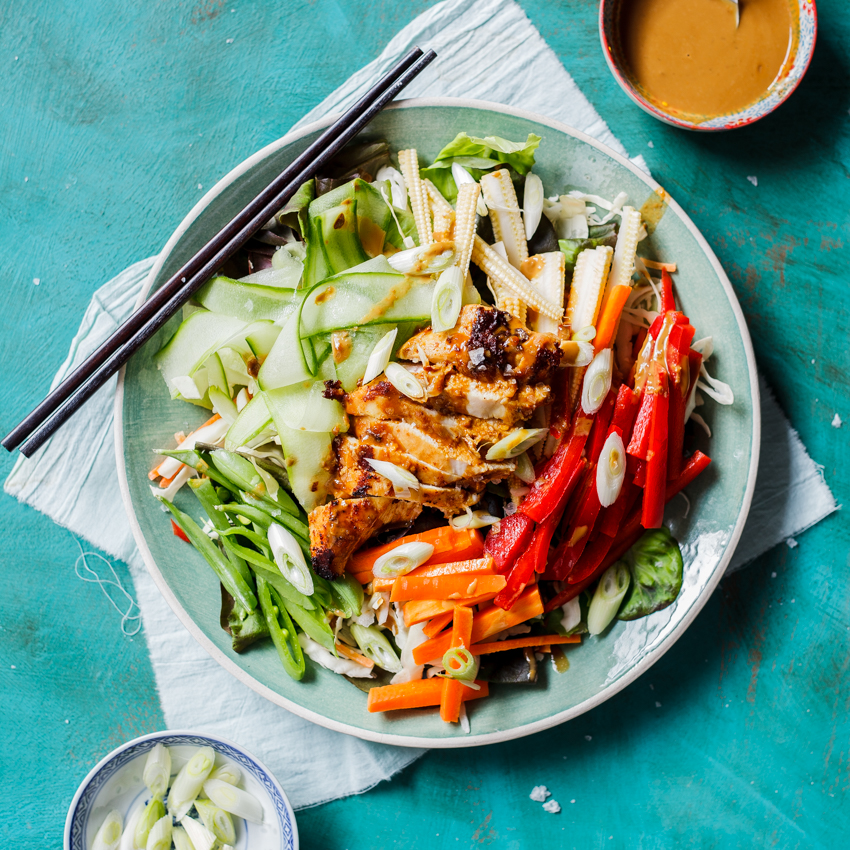

Caprese salad (tomato and mozzarella salad)
Make this classic Italian tricolore salad for a starter or side. It's incredibly simple but, when made with perfectly ripe tomatoes, is a real delight.

Make this classic Italian tricolore salad for a starter or side. It's incredibly simple but, when made with perfectly ripe tomatoes, is a real delight.
Try this no-fuss, midweek meal that's high in protein and big on flavour. Marinate chicken breasts, then drizzle with a punchy peanut satay sauce.
Upgrade cheesy tomato pasta with gnocchi, chorizo and mozzarella for a comforting bake that makes an excellent midweek meal.